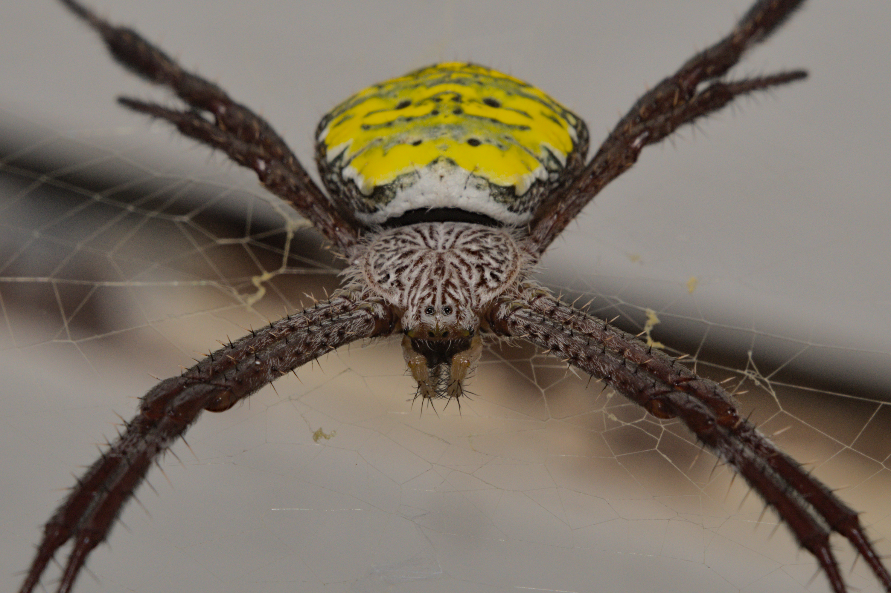

Nikon D500 · Laowa 100mm Macro @ 100mm · f/16 · 1/100 s · ISO 250 · November 2022 · Bali, Indonesia
Another orbweaver, this one of the genus Argiope, hailing from Southeast Asia. Sometimes known as St Andrew's cross spiders for the kinky pose they assume while awaiting prey in the center of their web. This specimen is a female, easily identified as their size dwarfs the males in comparison.